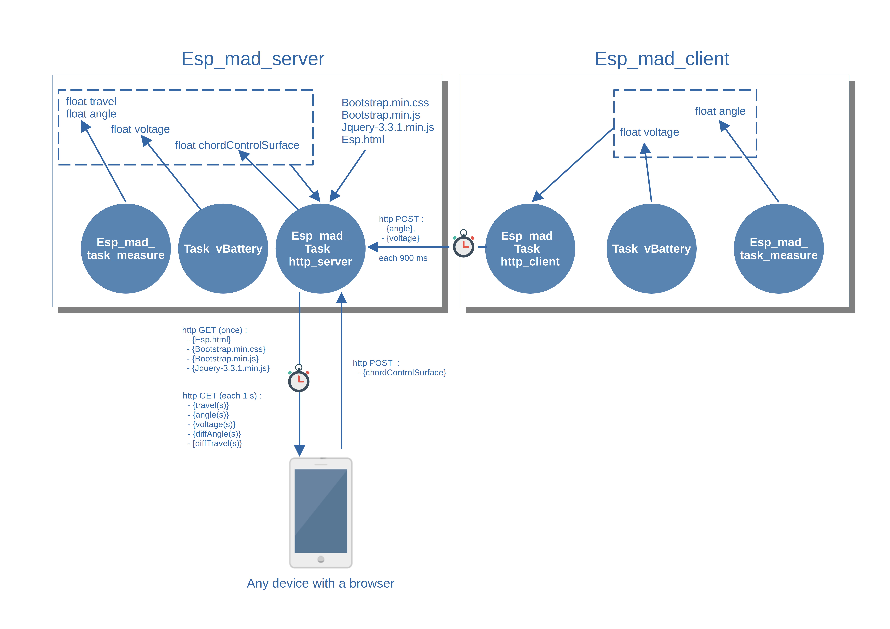

Software Design¶
Logical design¶
The following figure shows the overall logical architecture of the system composed of a server and a client.
Server software architecture¶
- The « Server » software code is made up of three files:
esp_mad.cpp: this is the launch file which will create two FreeRtos tasks
the « measure » task
the « http-server » task
esp_mad_task_http_server.c: it is the file which contains the code of the task « http-server »
esp_mad_task_measure.cpp: it is the file which contains the code of the task « measure ».
The http-server task¶
The http-server task starts by launching a DHCP server, then initializes the board in AP mode by associating the SSID defined in the esp_map.h file.
The address 198.168.1.1 is assigned to the Wifi AP as defined when the DHCP server is launched.
- During the initialization of the Wifi in AP mode, an event_group is created to receive the various events that can be received by the Wifi stack.
When the SYSTEM_EVENT_AP_START event is received, the web server is launched using the httpd function library. When the server is launched, the various URLs on which the server is likely to react are recorded and for each URL a callback function is associated.
When the event SYSTEM_EVENT_AP_STACONNECTED is received, the corresponding bit is recorded in the event_group.
On receipt of the SYSTEM_EVENT_AP_STADISCONNECTED event, the corresponding bit is recorded in the event group.
On receipt of the SYSTEM_EVENT_AP_STOP event, the web server is stopped and the associated resources are released.
Note
The URL « / », which corresponds to the reception of an HTTP GET at the address 192.168.1.1, i.e. the main page of the site (esp.html), triggers the loading of the elements embedded in the page, which are bootstrap.min.css, bootstrap.min.js and jquery-3.1.1.min.js, by as many HTTP GET requests as required by the client browser.
All these elements, as well as the esp.html page, are embedded in the .rodata segment of the ESP32 memory (using the EMBED_FILES directive in the project’s CMakeList.txt file).
Each element is then referenced in the code using the following two directives :
extern const uint8_t esp_html_start[] asm("_binary_esp_html_start");
extern const uint8_t esp_html_end[] asm("_binary_esp_html_end");
Note
It is also possible to perform the same operations using a SPI Flash File System (SPIFFS), but I have not tested this solution. For a Web server using more than one HTML page, this method is probably more interesting than the method consisting in embedding the pages in the .rodata segment.
The informations calculated by the « Measure » task (angle and travel) are retrieved by the http_server task from memory, these two variables being defined as global variables. These two values are updated by the « Measure » task every 10 ms.
The deflection angle information measured by the « Client » board is received at a frequency of 900 ms by an HTTP POST request. On receipt of the request, the deflection value in mm is calculated according to the control surface chord.
When the chord is changed from a web browser, an HTTP POST request is received and the chordControlSurface global variable is changed.
The « measure » task¶
- The task « measure » performs the following functions :
initialization of the I2C bus,
calibration of the MPU6050 component,
Then periodically:
Reading of the accelerometer and gyroscope values on the axes (x, y, z),
Calculation of the angle in degrees based on the previous values.
Note
the task « measure » is identical for the « Server » board and the « Client » board. The only difference is that in the case of the « Server » board, the deflection value in mm is calculated periodically by the « measure » task, whereas for the « Client » board, the value of the angle is transmitted to the « Server » board using an HTTP POST request and it is the « Server » board that performs the calculation of the deflection in mm.
Complementary filter is used to combine accelero and gyro datas. see complementary filter for more information.
Basically complementary filter avoid used of kallman filter, quiet difficult to implement in small platform. Gyro are used for fast motion as accelero are used for slow motion.
Note
The deflection value in mm is calculated as a function of the angle by the following formula : X = 2* sin(alpha/2) * L.

Client software architecture¶
- The « Client » software code is made up of three files:
esp_mad_client.cpp: this is the launch file which will create two FreeRtos tasks
the « measure » task
the « http-client » task
esp_mad_task_http_client.c: it is the file which contains the code of the task « http-server »
esp_mad_task_measure.cpp: it is the file which contains the code of the task « measure ».
The measure task¶
The measure task is totally the same code than the measure task of the « Server ». No more words to add to this section :-)
The esp_map_task_http_client¶
The « hhtp-client » task start to initialize the board on wifi station.
Then, the task checks periodically if the board is connected to the « Server » Board, and if the MPU6050 calibration is fisnish testing the global Binit variable.
If these conditions are true, an HTTP POST with the angle measure by the board is send to the « Server » board.
UX Design¶
The man-machine interface of the project consists of a single HTML page (esp.html).
This page is built using the CSS framework bootstrap.
The page embeds an ajax script which periodically makes a HTTP GET request to the « Server » board which sends back the different information to be displayed in the page. A second script makes it possible to carry out the change of the chord of the control surfaces by a HTTP POST request.
To connect to the page, it is first necessary to connect to the Wifi ad’hoc network of SSID ESP_MAD.

Then, just type the address 192.168.1.1 in the URL bar of your browser to connect to the main page of the project.

The « Angle » tab selection causes the page showing the deflection angles for both board to be displayed.

Finally, the « Setting » tab will display the page that allows you to change the value of the control surface chord. Note that in the current version, the project allows to control only one « Client » both and both boards deal with the same chord value.

To change the value of the chord, modify the value in the input field and validate with « Save change chord » button.